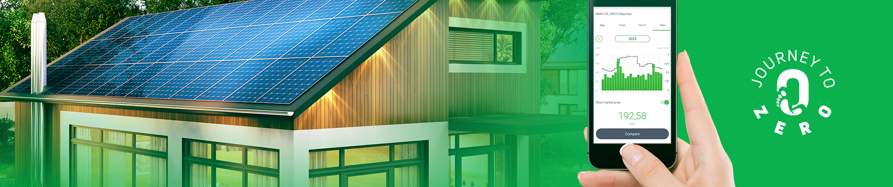

Enefit Prosumer Challenge
Predicting the Energy Consumption Patterns of "Prosumers" to Improve the Power Grid Stability
Goal of the Challenge
The Enefit prosumer Challenge was created to improve the stability of the electric grid in Estonia by predicting the energy pattern of the "prosumers".
What is a Prosumer?
Prosumer is an umbrella term for productor and consumer. It was coined to speak about the entities that both products and consumes energy. Here, the focus is on electricity. While the main source of electricity produced is solar energy, we should not forget that a small part of the electricity is produced by small wind turbin and other means.
Beyond the Challenge
The challenge main goal is to improve the stability of the Estonian power grid. To maximize this goal, we should not only predict the behavior of prosumers but also figure out the weaknesses of energy production in Estonia.
Temperature Change & Thermal Inertia
When the temperatures vary outside, the temperature inside of the house does not change as fast. The walls and the floor helps maintain a more constant temperature. Depending on the size, the walls and roof surface area, insulation quality, the house can resist to temperature change for a longer period of time.
A high temperature inertia can be advantageous in fall, when it delays the need for heating. However it can be problematic in summer because it becomes hard to cool the structure at night
Electric Stove vs. Heat Pump
Electric stoves are used since a long time. We can approximate their energy efficiency to 1. For every Joules of electricity consumed, one joule of heat is generated.
Heat pumps however usually have an energy efficiency between 2 and 5. For each Joule of electricity consumed, between 2 and 5 joules of heat are transfered. While a negligable amount of heat is generated by the compressor outside, the source of heat is the outside air. Heat from the outside is transfered to the inside. The efficiency varies depending on the capacity, the fluid used in the pipe, and the temperature outside
While heat pumps offer a better efficiency, they are not able to extract temperature from the outside air at extreme temperature.
How Long Does it Take to Restart a Power Plant?
The time taken to restart a power plant varies a lot depending on the source of energy and the technology used. In the figure below, we can see the time taken by the most common power plant types in the United States.

As we can see, nuclear power plants are the slowest to restart. It takes more than 12 hours to go to full capacity. Therefore they are not a good solution to compensate the variability of consumption and production from source such as solar and wind.
In the second figure, we can see the proportion of time taken to restart the power plant in the United States. Wind and Solar are in the graph to show their part in the energy mix but it is important to note that humans have no control of the output of solar panels and wind turbines.